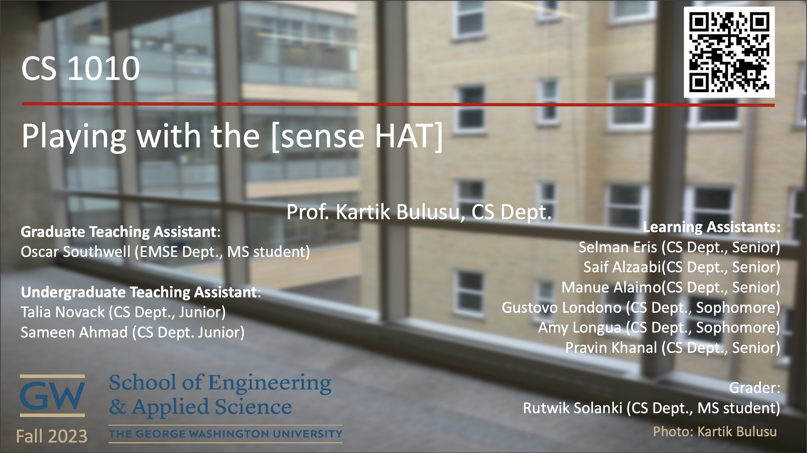
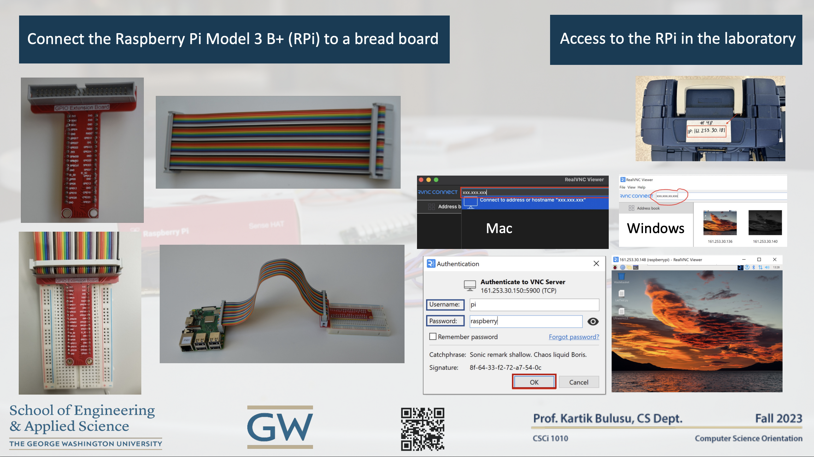
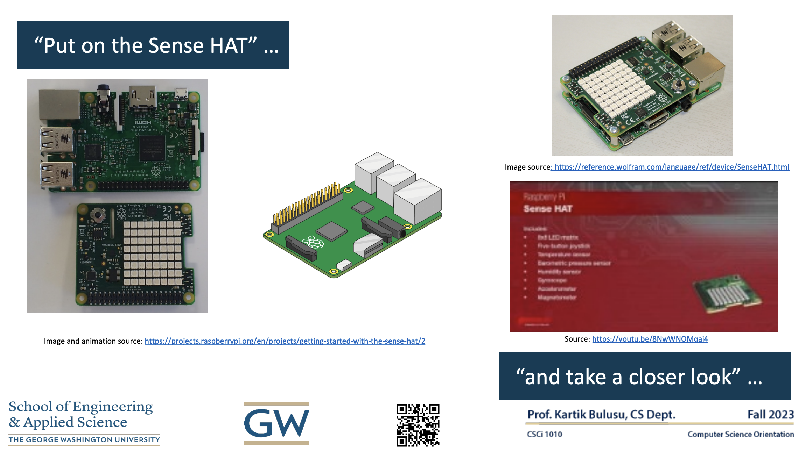
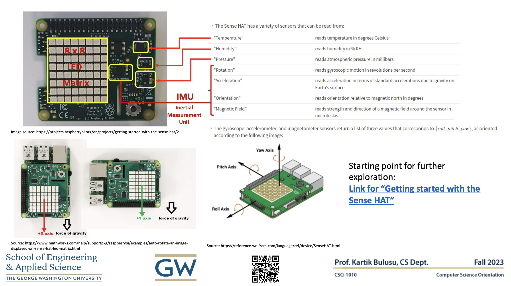
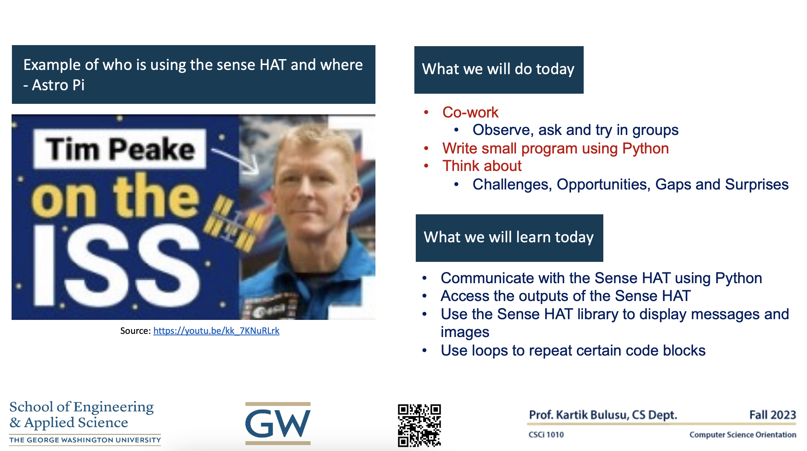

Playing with the [sense HAT]
Referencing this presentation:
Bulusu, Kartik V. (2023, October 27). Week-4 Presentation: CSCI1010 Computer Science Orientation [Playing with the sense HAT.] Department of Computer Science, The George Washington University. https://gwu-csci1010.github.io
Course materials developed by Prof. Kartik Bulusu for CS1010-Fall 2023.
Slide 1

Slide 2

Slide 3
 Image and Animation Source: https://projects.raspberrypi.org/en/projects/getting-started-with-the-sense-hat/2
Image Source: https://reference.wolfram.com/language/ref/device/SenseHAT.html
Source: https://youtu.be/8NwWNOMqai4
Slide 4
 Starting point for further exploration: Getting started with Sense HAT
Image Source: https://projects.raspberrypi.org/en/projects/getting-started-with-the-sense-hat/2
Source: https://reference.wolfram.com/language/ref/device/SenseHAT.html
Slide 5

Source: https://youtu.be/kk_7KNuRLrk